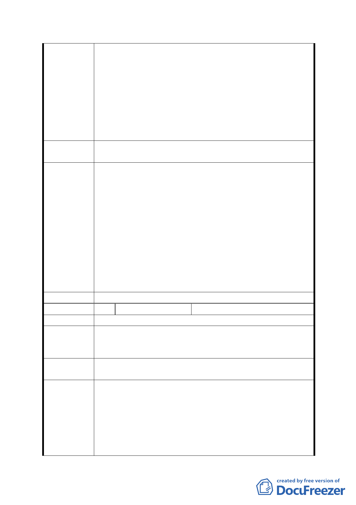

用宏觀之角度，以捷運木線辛亥站便利性為主幹，將
周遭之墳區遷葬，用該土地比照信義計劃區計劃，有
效結合人文與經濟發展作更新都市規劃，使土地變更
為多用途使用並將蓄水池分佈於計劃之內，用以促進
附近商業發展而不是昂貴卻又不實用的公園和保護
地，使捷運木柵線辛亥站能發揮功能，造福里民。
以上陳請政府有關單位，能在市政建設上以市民迫切
需求為優先考量，而非用政治選舉酬庸性質率性而為，造成
民怨。
第五次專案小組
審查結論
同編號 1
1.同編號 7。
2.本防洪調節池管理及維護單位本府工務局水利工程處，爾
後由水利處編列年度預算辦理維護管理工作。地面調節池
部份平常呆水深度約 0.5 公尺，並以緩坡之設計營造近生
態景觀及親水空間。另區公所將於本池旁設置區民活動中
市府修正後 心，亦可納入本防洪調節池管理及維護體系內，故人力巡
回 應 說 明 視及就近管理應無虞。
3.本變更案依本府工務局水利工程處解決地區水患需求及
軍方既有軍事任務需求，故將學校用地變更為調節池用
地、機關用地；剩餘土地則依地形環境條件檢討變更為保
護區、公園、道路等使用，以併同改善地區交通及環境品
質。故依目前規劃，本計畫區已無規劃商業區之空間。
委員會決議 同意依「市府修正後回應說明」辦理
編 號 18 陳情人
潘毓正
陳 情 理 由 本區缺乏一休閒活動之綠化公園。
1. 是否可將該地段變更為讓市民休閒運動之公園。
建 議 辦 法 2. 軍營能一併遷移將更有利整體公園之規劃。
3. 貯水池能另覓其他地方興建較妥適。
第五次專案小組
審查結論
同編號 1
1.本防洪調節池用地以公園化設計，兼具提供地區居民休憩
功能，且本計畫劃設公園用地可與防洪調節池用地相互串
市府修正後
回應說明
連，塑造公共開放軸帶，擴大公眾使用該等公共設施之效
益。另文山區公所亦有設置區民活動中心供里民集會、舉
辦藝文活動及公共事務之場地需求，本防洪調節池用地已
配合預留相關空間，供區公所設置區民活動中心。
2.同編號 7。
- 27 -